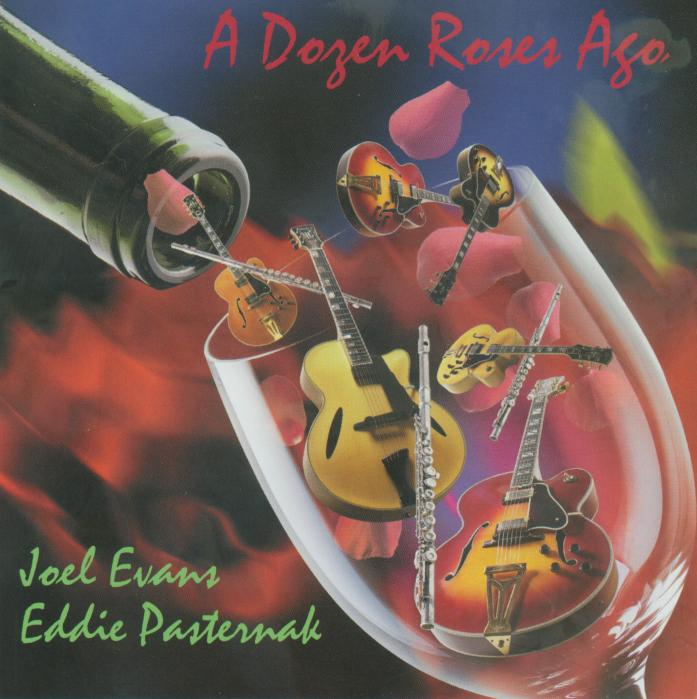

A Dozen Roses Ago
Joel Evans and Eddie Pasternak
Dinner jazz, midnight sounds, mood music for the blues, guitarist extaordinaire Eddie
Pasternak and flute master Joel Evans weave instrumental magic together with both the
certainty and closeness of musicians who have been playing together their entire adult lives,
which they have.
– Joel Selvin, San Francisco Chronicle
Song List
- It’s You or No One
- Slow hot wind
- Polkadots & Moonbeams
- Strollin’
- Skylark
- Once in a While
- Isn’t it romantic
- Cheek to cheek
- Aparecida/zingaro
- Here’s that rainy day
- It Could Happen to You
- A Dozen Roses Ago
- Purchase or stream:
- Amazon.com
- Spotify
- Apple Music
- YouTube
- Pandora